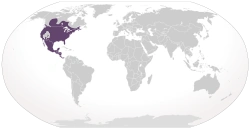
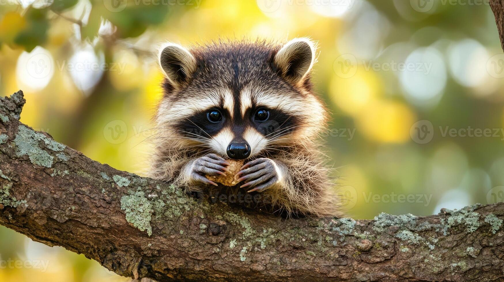
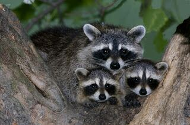
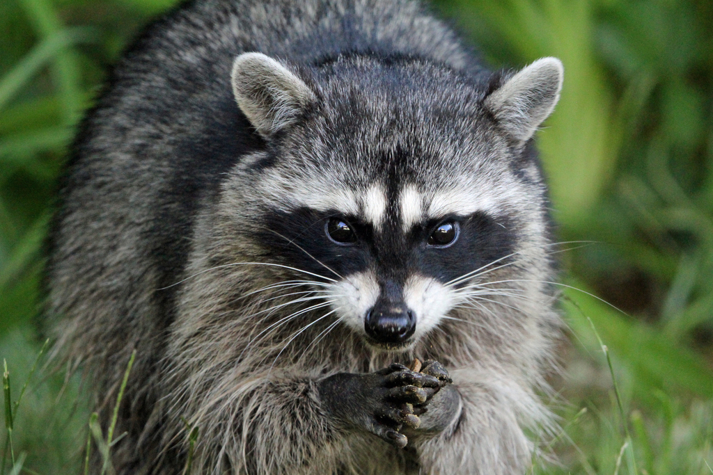

Hábitat y Ubicación
El mapache es originario de América, y se encuentra desde Canadá hasta Panamá, especialmente en zonas no desérticas. Sin embargo, debido a su distribución como mascota y su posterior abandono, ahora habita en muchas partes del mundo, excepto en la Antártida. En Europa, Rusia y regiones mediterráneas, se ha convertido en una especie invasora, afectando la fauna local. En el Cáucaso, Alemania y los Países Bajos, su presencia se debe a escapes de granjas peleteras. En Asia hay poca información, pero se sabe que desde los años 70 algunos mapaches han sido importados como mascotas; allí conviven con especies locales como el tanuki, sin representar por ahora un gran problema ambiental.

Alimentación
Son animales omnívoros y oportunistas. Comen plantas variadas, frutas y nueces, incluyendo uvas, cerezas, manzanas, caquis, bayas, y bellotas salvajes. Donde disponible los mapaches pueden también comer los melocotones, los ciruelos, los higos, los agrios, las sandias, los tuercas de la haya, y las nueces. También forrajean para los cangrejos, los insectos, los roedores, las ranas, los pescados, y los huevos del pájaro. Los mapaches están adaptados para comer basura y otras comidas disponibles en áreas suburbanas y urbanas.

Reproducción
La época de apareamiento de los mapaches va de febrero a junio y la gestación dura de 63 a 65 días. Tienen una camapda de crías por año y enc ada camada pueden nacer entre tres y siete crías, aunque usualmente nacen cuatro. Los bebés nacen ciegos y comenzarán a abrir los ojos entre los 18 y los 24 días de edad. Permanecerán con la madre durante el primer invierno para independizarse la siguiente primavera. La madre y sus descendientes pueden permanecer juntos incluso en edad adulta.

Estado de conservación
Los mapaches boreales son una especie adaptativa y generalmente no se consideran en peligro de extinción. Sin embargo, enfrentan diversos desafíos que pueden afectar sus poblaciones como puede ser la caza y comercio de pieles, los accidentes en el área urbano y el control de las especies invasoras.

Información general del mapache
| Característica | Descripción |
|---|---|
| Nombre científico | Procyon lotor |
| Distribución | América del Norte, Europa, Asia |
| Dieta | Omnívoro |
| Reproducción | 2-5 crías por camada |
| Estado de conservación | Preocupación menor |